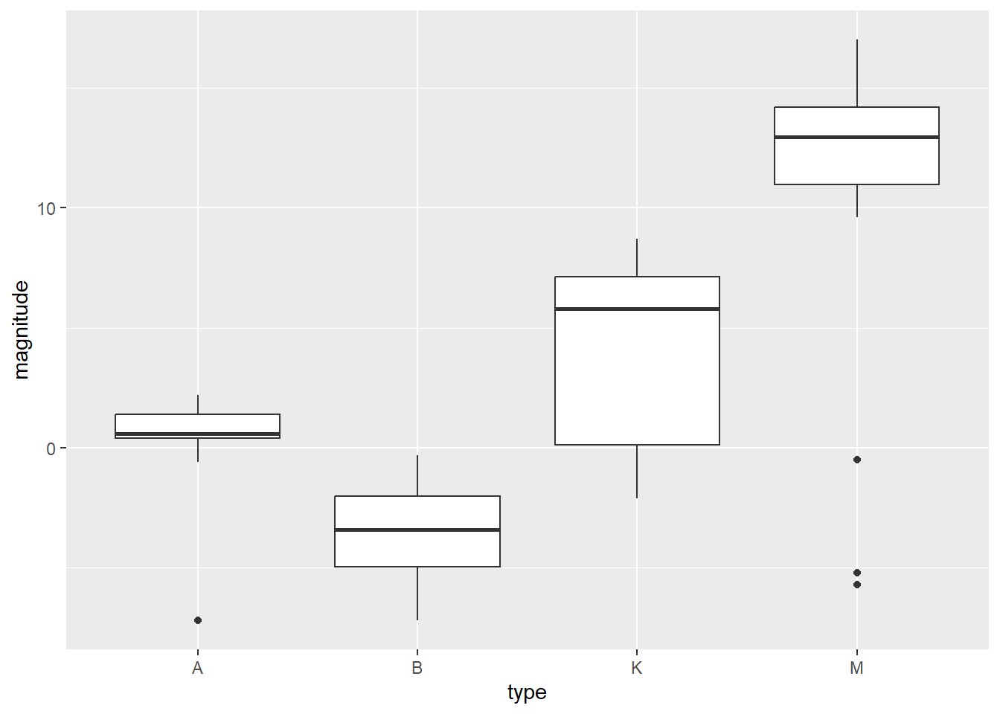

In this exercise, I chose the “stars” dataset from the “dslabs” package and selected stars in the spectral classes of A/B/K/M. Based on selected data, I generated a synthetic dataset which contained name, absolute magnitude, surface temperature, and the spectral class of the star. With the synthetic data, I examined the relationships between the variables.
#Create dataset star_1 that contains stars from spectral classes of A/B/K/M, as only these classes have more than 10 stars, and change type into a factor variablestar_1 <- stars %>%filter(type %in%c("A","B","K","M")) %>%mutate(type=factor(type) )#preview star_1dplyr::glimpse(star_1)
Rows: 80
Columns: 4
$ star <fct> SiriusA, Arcturus, Vega, Rigel, Betelgeuse, Achemar, Hadar, …
$ magnitude <dbl> 1.4, -0.4, 0.5, -7.2, -5.7, -2.4, -5.3, 2.2, -0.8, -3.4, -5.…
$ temp <int> 9620, 4590, 9900, 12140, 3200, 20500, 25500, 8060, 4130, 255…
$ type <fct> A, K, A, B, M, B, B, A, K, B, M, A, K, A, B, B, B, B, B, B, …
Now we have an original dataset that contains 80 stars from the spectral classes of A/B/K/M. We will create synthetic data based on this.
Explore the original data before simulation
We need to get some descriptive statistics and examine relationships between variables in the original data.
#Boxplot: magnitude ~ type ggplot(star_1, aes(type, magnitude)) +geom_boxplot()

#Get mean and std of magnitude by typestar_1 %>%group_by(type) %>%summarise_at(vars(magnitude), list(name = mean,sd))
# A tibble: 4 × 3
type name fn1
<fct> <dbl> <dbl>
1 A 0.362 2.43
2 B -3.53 1.92
3 K 4.16 3.77
4 M 11.5 5.40
Stars of type M have largest mean magnitude, while type B stars have the lowest magnitude. We will recreate this correlation in the synthetic data.
Create synthetic data
We will create synthetic data “star_s” based on the existing data “star_1”. Particularly, we will retain the correlation between magnitude and type.
# Set a seed for reproducibilityset.seed(456)# Define the number of observations (stars) to generaten_stars <-80# Create an empty data frame star_s <-data.frame(starID =numeric(n_stars),magnitude =numeric(n_stars),type =character(n_stars),logtemp =numeric(n_stars))# 1. generate star IDstar_s$starID <-1:n_stars# 2. generate log(temperature)# use uniform distribution as indicated by histogram of real data# use same min and max values as real datastar_s$logtemp <-round(runif(n_stars, min =min(log(star_1$temp)), max =max(log(star_1$temp))), 1)# 3. generate type# create with probabilities based on real data distributionstar_s$type <-sample(c("A", "B", "K","M"), n_stars, replace =TRUE,prob =as.numeric(table(star_1$type)/100))# 4. generate magnitude# recreate the correlation between magnitude and typestar_s$magnitude[star_s$type =="A"] <-round(rnorm(sum(star_s$type =="A"), mean =mean(star_1$magnitude[star_1$type =="A"]), sd =sd(star_1$magnitude[star_1$type =="A"])), 3)star_s$magnitude[star_s$type =="B"] <-round(rnorm(sum(star_s$type =="B"), mean =mean(star_1$magnitude[star_1$type =="B"]), sd =sd(star_1$magnitude[star_1$type =="B"])), 3)star_s$magnitude[star_s$type =="K"] <-round(rnorm(sum(star_s$type =="K"), mean =mean(star_1$magnitude[star_1$type =="K"]), sd =sd(star_1$magnitude[star_1$type =="K"])), 3)star_s$magnitude[star_s$type =="M"] <-round(rnorm(sum(star_s$type =="M"), mean =mean(star_1$magnitude[star_1$type =="M"]), sd =sd(star_1$magnitude[star_1$type =="M"])), 3)
Check the synthetic data
#Preview synthetic datahead(star_s)
starID magnitude type logtemp
1 1 -3.686 B 8.0
2 2 -1.974 B 8.3
3 3 7.228 K 9.6
4 4 -2.258 A 9.9
5 5 -2.565 B 9.7
6 6 7.863 K 8.6
summary(star_s)
starID magnitude type logtemp
Min. : 1.00 Min. :-6.766 Length:80 Min. : 7.800
1st Qu.:20.75 1st Qu.:-1.528 Class :character 1st Qu.: 8.500
Median :40.50 Median : 2.488 Mode :character Median : 9.000
Mean :40.50 Mean : 3.444 Mean : 9.050
3rd Qu.:60.25 3rd Qu.: 7.309 3rd Qu.: 9.625
Max. :80.00 Max. :19.699 Max. :10.200
Based on the results above, we can tell the linear model perfectly recovers the correlation between magnitude and type in the synthetic data.
Fit another linear model with interaction between type and log(temperature)
Model: magnitude = type + logtemp + type*logtemp
# Fit linear model model2 <-linear_reg() %>%set_engine("lm") %>% parsnip::fit(magnitude ~ type + logtemp + type*logtemp, data = star_s)broom::tidy(model2)